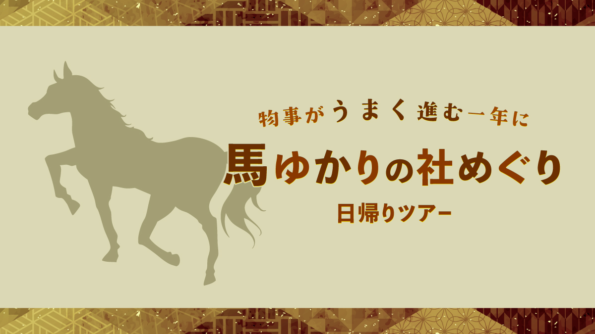

最新の情報は 公式サイトのツアーページ をご覧ください。
物事が“うまく”進む一年に 馬ゆかりの社めぐり日帰りツアー

※大人・子ども同額
| お申込み状況（最少催行人数4名） |
| 募集中 |
※最新のお申込み状況はお問い合わせください
2026年の干支「午（うま）」にちなんで、
馬と深いご縁を持つ神社を巡るタクシーツアーが誕生。
神馬が祀られ、競馬発祥の地ともいわれる上賀茂神社。
広々とした境内に流れる清らかな空気の中、馬とのご縁に静かに触れるひとときをお過ごしください。
続いて訪れるのは、忠臣蔵で知られる大石内蔵助を祀る、大石神社。
忠義や忍耐、物事をやり遂げる力にあやかりたいと、静かに手を合わせる参拝者が訪れます。
かわいいミニホース 「花ちゃん」に会えるかも！
そして旅の締めくくりは武運や勝運のご利益で知られる京都乃木神社。
人生の節目や大切な場面で力を授けてくれるといわれ、前向きな一歩を踏み出したい方にも人気の神社です。
神話の時代から近代、そして現代へ。
馬とともに紡がれてきた物語やご縁をたどりながら、「物事がうまく進みますように」と願う、午年ならではのひととき。
季節を問わず、気軽にご参加いただけるコースです。
行程
| 時間 | 場所 |
| 9:00 | 京都駅八条口MKタクシーのりば（集合・出発） |
| 9:30 | 上賀茂神社 ＜観光案内付き／約30分＞ 参考：上賀茂神社【公式】（外部サイト） |
| 10:40 | 大石神社 |
| 11:40 | 乃木神社 ＜観光案内付き／約30分＞ 参考：乃木神社公式HP（外部サイト） |
| 12:40頃 | 京都駅（解散） |
※渋滞等で、行程の入替や、予定通りの滞在時間をお取りすることができない場合がございます。
予めご了承ください。
この投稿をInstagramで見る
MKタクシー【公式】MK TAXI Official(@mktaxi.jp)がシェアした投稿
【MKトラベルLINE公式アカウント】
MKトラベルの新規ツアー情報をLINEでお届けいたします

【各SNSでも京都の情報やツアー情報をお届けしています】


旅行条件
| ツアー番号 | NEC65bd |
| 出発地 | 京都市 |
| 添乗員／ガイド | なし（乗務員がその業務を代行いたします）／なし |
| 食事 | なし |
| 最少催行人数 | 4名 |
お申込みについてのご注意
※最少催行人数は4名様です。最少催行人員に満たない場合は、旅行の実施を取りやめることがあります。出発の３日前にその旨をご連絡し、お客様から当社がお預かりしている旅行費用の全額をお返しいたします。
※旅行条件・旅行代金は、2026年1月1日現在を基準としています。
※行程および帰着時間は交通事情などにより変更になる場合があります。
※お申込みの前に弊社の募集型企画旅行規約をご確認ください。
※ご来店での受付は事前予約制となります（10:00～17:30／日祝定休）。
よくある質問
Q.1名ですが、申し込みできますか？
A.はい。お一人参加の方もたくさんいらっしゃいますので、お気軽にお申し込みください。
Q.知り合いだけで楽しみたいです／希望日に人が集まるか不安です
A.貸切で再現できる場合もございますのでご相談ください。お問合せフォームはこちら
＜お問合せフォームはこちら▶＞
＜MKトラベルTOPはこちら▶＞
＜おすすめツアー一覧はこちら▶＞